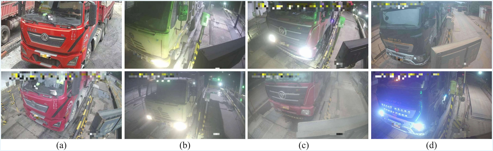
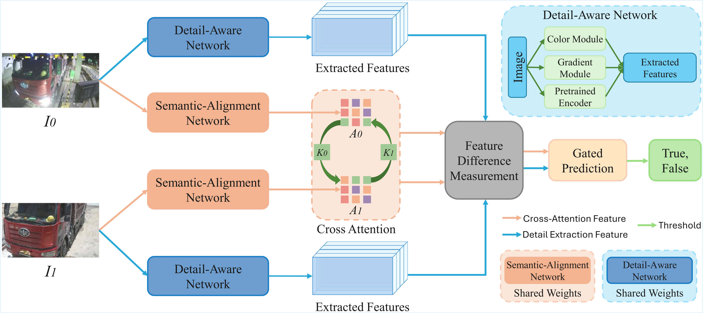

Enterprise Truck
Re-Identification
Semantic-Aligned and Detail-Aware Image Feature Matching
Environmental Challenges
Visualizing high-variance lighting and viewpoint shifts handled by the system
This project represents a complete machine learning lifecycle, delivered from the ground up. We managed the design of data collection protocols, built a custom dataset of 5,009 image pairs, and developed the final production-ready model for real-world industrial use.
The Innovation
Siamese architecture combining Semantic-Alignment and Detail-Aware networks
The dual-network approach effectively mimics human observation to solve vehicle identification in extreme environments:
- • Global Understanding: A Semantic-Alignment network uses cross-attention to maintain accuracy despite changes in camera angle or vehicle scale.
- • Fine-Grained Detail: A Detail-Aware network focuses on unique color, gradient, and texture cues to differentiate look-alike vehicles.
- • Industrial Robustness: The system remains stable during nighttime operations even when blinded by high-beam headlights.
Academic Foundation
This industrial application is built upon our original scientific publication:
Learning for Semantic-Aligned and Detail-Aware Image Feature Matching
Winner: Best Paper Award & Best Oral Presentation
CVIP 2025 | Emphasizing industry-leading innovation
Measured Accuracy
25% higher accuracy than industry-standard YOLOv9 (64.94%).
Inference Speed
Validated on CPU-based industrial servers for cost-effective scaling.
Efficiency Gain
Reduction in human monitoring; staff only intervene when alerted.
Technical Stack
Software
PyTorch, Adam Optimizer, Docker
Training Hardware
Intel Xeon, NVIDIA RTX 3090 GPU
Data Pipeline
Continuous Collection & Extensible Workflows